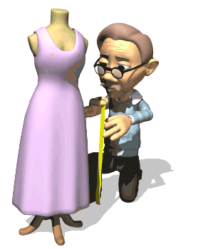

Отгадай профессию

Он рассчитывает точно, Чтоб всё было крепко, прочно. Без его расчёта Развалится работа!
Он спектаклем заправляет, назубок все сцены знает. Учит он, как роль играть. Как его друзья назвать

Рубашку сможет он пошить Из ткани вам льняной. К ней пуговки затем пришить - На то он и …